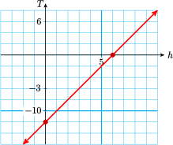
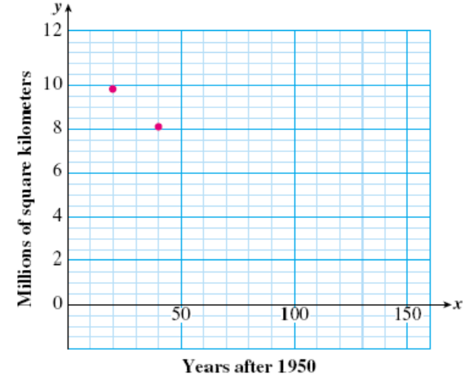

Section 3.1 Intercepts
Subsection Intercepts of a Line
Intercepts.
The intercepts of a line are the points where the graph crosses the axes.
It is easy to recognize the intercepts of a line on a good graph. Here is a graph of the line
We can see that its \(x\)-intercept is the point \((-8,0)\text{,}\) and its \(y\)-intercept is \((0,4)\text{.}\)
If we have an equation for a line we can find the intercepts of its graph algebraically. In Example 1 we'll use algebra to find the intercepts of this line.
Look Closer.
Look at the intercepts on the graph above. Because the \(y\)-intercept of a graph lies on the \(y\)-axis, its \(x\)-coordinate must be zero. And because the \(x\)-intercept lies on the \(x\)-axis, its \(y\)-coordinate must be zero.
Example 3.1.
Use algebra to find the intercepts of the graph of \(~y=\dfrac{1}{2}x+4\text{.}\)
To find the \(y\)-intercept, we substitute \(\alert{0}\) for \(x\) in the equation and solve for \(y\text{.}\)
The \(y\)-intercept is \((0,4)\text{,}\) as we saw above. To find the \(x\)-intercept, we substitute \(\alert{0}\) for \(y\) in the equation and solve for \(x\text{.}\)
The \(x\)-intercept is \((-8,0)\text{,}\) as expected.
To find the intercepts of a graph.
-
To find the \(x\)-intercept of a graph:
Substitute \(0\) for \(y\) in the equation and solve for \(x\text{.}\)
-
To find the \(y\)-intercept of a graph:
Substitute \(0\) for \(x\) in the equation and solve for \(y\text{.}\)
Reading Questions Reading Questions
1.
What are the intercepts of a line?
2.
How do we find the \(x\)-intercept of the graph of an equation?
Subsection The Intercept Method of Graphing
We can use the \(x\)- and \(y\)-intercepts to graph a linear equation quickly. Instead of choosing several different values of \(x\) to find points on the graph, we find the two intercepts and fill in the short table shown below. By finding the missing values for \(x\) and \(y\) we are finding the intercepts of the graph.
| \(x\) | \(y\) |
| \(0\) | \(\hphantom{0000}\) |
| \(\hphantom{0000}\) | \(0\) |
Example 3.2.
Graph the equation \(3x+2y=7\) by the intercept method.
First, we find the \(x\)- and \(y\)-intercepts of the graph. To find the \(y\)-intercept of the graph, we substitute \(0\) for \(x\) and solve for \(y\text{.}\)
The \(y\)-intercept is the point \((0,3\dfrac{1}{2})\text{.}\)
To find the \(x\)-intercept of the graph, we substitute \(0\) for \(y\) and solve for \(x\text{.}\)
The \(x\)-intercept is the point \((2\dfrac{1}{3}, 0)\text{.}\)
Here is a table showing the two intercepts. We plot the intercepts and connect them with a straight line to obtain the graph below.
| \(x\) | \(y\) |
| \(0\) | \(3\dfrac{1}{2}\) |
| \(2\dfrac{1}{3} \) | \(0\) |
It is a good idea to find a third point as a check. We choose \(x=\alert{1}\) and solve for \(y\text{.}\)
You can check that the point \((1,2)\) lies on the graph.
The intercept method for graphing a line is often faster and more efficient than making a table and plotting points.
To Graph a Linear Equation Using the Intercept Method.
Find the \(x\)- and \(y\)-intercepts of the graph.
- Draw the line through the two intercepts.
- Find a third point on the graph as a check. (Choose any convenient value for \(x\) and solve for \(y\text{.}\))
Reading Questions Reading Questions
3.
How do we graph a line by the intercept method?
4.
Make a table that you can use with the intercept method.
5.
What is the \(y\)-intercept of the line \(3x+2y=7\text{?}\)
Subsection Interpreting the Intercepts
The intercepts of a graph give us valuable information about a problem. They often represent the starting or ending values for a particular variable.
Example 3.3.
The temperature in Nome was \(-12 \degree\) at noon and has been rising at a rate of \(2 \degree\) per hour all day.
- Write and graph an equation for the temperature \(T\) at \(h\) hours after noon.
- Find the intercepts of the graph. What do the intercepts tell us about the temperature in Nome?
-
An equation for the temperature is
\begin{equation*} T=-12+2h \end{equation*}A graph of the equation is shown below.
 -
To find the \(T\)-intercept, we set \(h=0\) and solve for\(T\text{.}\)
\begin{equation*} T=-12 + 2(\alert{0})=-12 \end{equation*}The \(T\)-intercept is \((0,-12)\text{.}\) This point tells us that when \(h=0,~ T=-12\text{,}\) or the temperature at noon was \(-12 \degree\text{.}\)
To find the \(h\)-intercept, we set \(T=0\) and solve for \(h\text{.}\)
\begin{align*} \alert{0} \amp = -12+2h \amp \amp \blert{\text{Add 12 to both sides.}}\\ 12 \amp = 2h \amp \amp \blert{\text{Divide both sides by 2.}}\\ 6 \amp = h \end{align*}The \(h\)-intercept is the point \((6,0)\text{.}\) This point tells us that when \(h=6,~T=0\text{,}\) or the temperature will reach zero degrees at six hours after noon, or 6 pm.
Reading Questions Reading Questions
6.
The intercepts of a graph often represent the or values for a particular variable.
7.
What does the \(h\)-intercept tell us in Example 3.3?
Subsection Skills Warm-Up
Exercises Exercises
Choose the correct algebraic expression for each of the following situations.
1.
Ilciar has earned a total of 30 points on the first four quizzes in his biology class. What must he earn on the fifth quiz to end up with an average of 8?
2.
Jocelyn ordered five exotic plants from a nursery. She paid a total of $30, including an $8 shipping fee. How much did she pay for each plant?
3.
To buy new equipment, the five members of the chess club used $30 from the treasury, and each member donated $8. How much did the equipment cost?
4.
Hemman bought 5 tapes on sale, and he cashed in a gift certificate for $8. He then owed the clerk $30. How much was each tape?
5.
Nirusha and four other people won the office baseball pool. After spending $30 of her share, Nirusha had $8 left. What was the total amount in the pool?
Subsubsection Answers to Skills Warm-Up
- \(\displaystyle \dfrac{x+30}{5}=8\)
- \(\displaystyle 5x+8=30\)
- \(\displaystyle \dfrac{x-30}{5}=8\)
- \(\displaystyle 5x-8=30\)
- \(\displaystyle \dfrac{x}{5}-30=8\)
Subsection Lesson
Subsubsection Activity 1: Intercept Method of Graphing
Exercises Exercises
1.
- Find the \(x\)- and \(y\)-intercepts of the graph of\begin{equation*} 3x-2y=12 \end{equation*}
Graph by the intercept method.
\(x\) \(y\) \(0\) \(\hphantom{0000}\) \(\hphantom{0000}\) \(0\) - Plot a third point as a check.
2.
- Find the \(x\)- and \(y\)-intercepts of the graph of\begin{equation*} 2x=5y-10 \end{equation*}
Graph by the intercept method.
\(x\) \(y\) \(0\) \(\hphantom{0000}\) \(\hphantom{0000}\) \(0\) - Plot a third point as a check.
Subsubsection Activity 2: Interpreting the Intercepts
Exercises Exercises
1.
Around 1950, people began cutting down the world's rain forests to clear land for agriculture. In 1970, there were about 9.8 million square kilometers of rain forest left, and by 1990 that figure had been reduced to 8.2 million square kilometers. These two data points are shown on the graph below. The horizontal axis displays the year, \(x\text{,}\) and the vertical axis shows the amount of rainforest remaining, \(y\) (in millions of square kilometers).
- If we continue to clear the rainforests at the same rate, the graph will be a straight line. Draw a straight line through the two points in the figure above. Make your line long enough to cross both axes. 
-
Estimate the coordinates of the \(x\)- and \(y\)-intercepts of your graph.
\begin{align*} \amp x\text{-intercept:}~~ \underline{\hspace{4.545454545454546em}}\\ \amp y\text{-intercept:}~~ \underline{\hspace{4.545454545454546em}} \end{align*}Use the intercepts to answer the following questions:
- How many million square kilometers of rainforest were present initially?
- If we continue to clear the rainforest at the same rate, when will it be completely demolished?
2.
Sheri bought a bottle of multivitamins for her family. The number of vitamins left in the bottle after \(d\) days is given by
Find the intercepts and use them to make a graph of the equation.
\(d\) \(N\) \(0\) \(\hphantom{0000}\) \(\hphantom{0000}\) \(0\) - Explain what each intercept tells us about the vitamins.
Subsubsection Wrap-Up
Objectives.
In this Lesson we practiced the following skills:
- Finding the intercepts of a grpah
- Graphing a line by the intercept method
- Interpreting the intercepts in context
Questions.
- In Activity 1, Problem 1, Delbert says that the intercepts are \((4,-6)\text{.}\) What is wrong with his statement?
- In Activity 2, Problem 1, how did you find the answer to part (c)?
- In Activity 2, Problem 2, what intervals did you use to scale each axis?
Subsection Homework Preview
Exercises Exercises
- Find the \(x\)- and \(y\)-intercepts of the line.
- Use the intercept method to graph the line.
1.
\(3x-5y=15\)
2.
\(y=\dfrac{-4}{3}x+8\)
3.
\(\dfrac{x}{6} + \dfrac{y}{8} = -1\)
4.
\(x - \dfrac{2}{3}y -4 = 0\)
Subsubsection Answers to Homework Preview
- \(\displaystyle (5,0),~(0,-3)\)
- \(\displaystyle (6,0),~(0,8)\)
- \(\displaystyle (-6,0),~(0,-8)\)
- \(\displaystyle (4,0),~(0,-6)\)
Exercises Homework 3.1
For Problems 1–6,
- Find the \(x\)- and \(y\)-intercepts of the line.
- Use the intercept method to graph the line.
1.
\(2x+4y=8\)
2.
\(x+2y+10=0\)3.
\(2x=14+7y\)4.
\(y=-4x+8\)5.
\(\dfrac{x}{20}+\dfrac{y}{30}=1\)6.
\(3x-2y=120\)For Problems 7–12, match each equation with its graph. (More than one equation may describe the same graph.)
7.
\(2x+3y=12\)8.
\(2x-3y=12\)9.
\(3x-2y=12\)10.
\(-3x-2y=12\)11.
\(\dfrac{x}{6}-\dfrac{y}{4}=1\)12.
\(\dfrac{x}{4}-\dfrac{y}{6}=1\)For Problems 13–18, solve each pair of equations. In part (b) of each problem, your answer will involve the constant \(k\text{.}\)
13.
- \(\displaystyle -2x=6\)
- \(\displaystyle -2x=k\)
14.
- \(\displaystyle x+4=7\)
- \(\displaystyle x+4=k\)
15.
- \(\displaystyle x-5=9\)
- \(\displaystyle x-5=k\)
16.
- \(\displaystyle 2x+3=8\)
- \(\displaystyle 2x+k=8\)
17.
- \(\displaystyle 15-4x=3\)
- \(\displaystyle 15-4x=k\)
18.
- \(\displaystyle 9+3x=-1\)
- \(\displaystyle 9+kx=-1\)
19.
During spring break, Francine took the train to San Francisco and then bicycled home. The graph below left shows Francine's distance \(d\) from home, in miles, after cycling for \(h\) hours. Use the graph to answer the questions.
- How far is it from San Francisco to Francine's home?
- How many hours did Francine cycle to get home?
- After cycling for 12 hours, how far is Francine from home?
- How far did Francine cycle in the first four hours?
For Problems 20–22,
- Find the intercepts of each linear equation.
- Use the intercept method to graph the line.
- Explain what the intercepts mean in terms of the problem situation.
20.
The amount of home heating oil (in gallons) in the Olsons' tank is given by the equation \(G=200-15w\text{,}\) where \(w\) is the number of weeks since they turned on the furnace.
21.
Dana joined a savings plan some weeks ago. Her bank balance is growing each week according to the formula \(B=225+25w\text{,}\) where \(w=0\) represents this week.
22.
Delbert bought some equipment and went into the dog-grooming business. His profit is increasing according to the equation \(P=-600+40d\text{,}\) where \(d\) is the number of dogs he has groomed.
23.
At what point does the graph of \(2x-3y=35\) cross the \(x\)-axis?
At what point does the graph of \(1.4x+3.6y=-18\) cross the \(y\)-axis?
24.
The \(x\)-intercept of a line is positive and its \(y\)-intercept is negative. Is the line increasing or decreasing? Sketch a possible example of such a line.